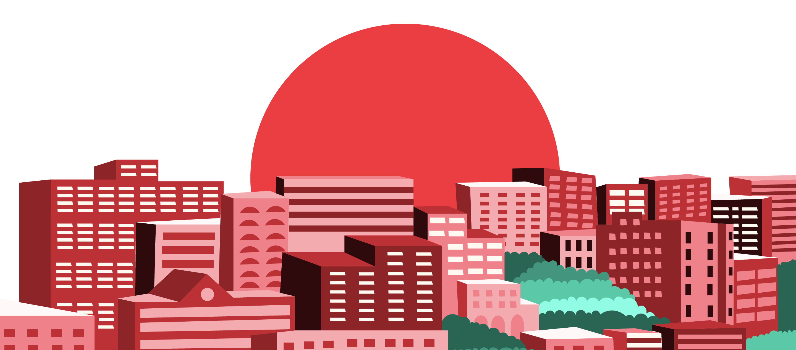

Gendered Experience: Online & Offline
Dana Abu Ali & Deemah Omari | June 6, 2021

We were both in middle school when the wave of social media got to our hometown, Amman, and we were very eager to ride it. Ever since then, these platforms have been unequivocally, albeit unevenly, changing the social fabric of our society. Social media had emerged to offer a platform where people can create content that is both shaped by, and simultaneously shaping, their lives. Eventually, the online world curated by social media platforms evolved to mirror the real world and, consequently, inherit its social issues. One of those issues, which has cast an aging shadow over Jordan and many of its neighboring countries, is gender-based violence (GBV). All too often, as we scroll through our feeds, we read of sickening crimes against girls and women, and social media platforms are often chapters in many of those horror stories.
While technology in general, and the internet in particular, has provided ways to prevent and battle gender-based violence, in other ways, it has facilitated it. A World Bank study focused on the intersection between gender-based violence and the technology states that “like other forms of gender-based violence, technology- facilitated violence can have pervasive and insidious effects. More than 85% of respondents who had experienced online violence reported some form of real-world impact, from fearing for their safety to feeling anxious or depressed”. In some cases it leads to an unimaginable consequence: loss of life.
In this article, we aim to explore the symbiotic relationship between the offline and online spheres through the stories of women in the Middle East and North Africa. Their experiences speak of inequality, gender-based violence, and societal issues that have transcended the physical world into the virtual. Yet, they also speak of new means of “breaking barriers” and finding support that wasn’t always accessible in the physical world. This is not to say that gendered inequality is restricted to online experiences, as many Middle Eastern women are prevented from having an online presence to begin with. After all, almost half of Middle Eastern women do not own a smartphone; in Jordan for example, as of 2015, only 31% of women were smartphone users, compared to 69% of men. Yet, despite the gender gap in smartphone usage and online presence, women globally continue to face more online violence than men.
We will critically examine the particularities of the global phenomenon of technology-facilitated violence within the context of the Middle East and North Africa, in an attempt to reimagine social media that is more decentralized, responsible, empowering, and protective of human life.
Click through the thumbnails to explore different topic. As you read these stories online, we invite you to take a moment to think about the social media platforms that you use in your daily life, and the impact that they’ve had, and continue to have, on very real humans offline.

On The Future
The internet and social media are here to stay, and with the right design thinking behind them, these tools can be utilized as a powerful method of communication. Yet, that cannot be achieved without law enforcement and regulatory authorities working hand-in-hand with innovators and NGOs. On the one-hand, governments should follow recommendations of legal research on online gender-based violence and make urgent regulatory changes that can better protect women online. On the other hand, technological disruption to protect human life should jump to the priority of user experience design goals. Moreover, most online platforms are run by Western men15, and although diversity has been tokenized to serve underlying motives, genuine diversity in the innovation of online platforms and services is a must. Given their direct exposure to and awareness of vulnerabilities that their respective groups face, individuals of different genders, socioeconomic, racial, and ethnic backgrounds should be encouraged and enabled to participate in the innovation and decision-making processes, and should be included in leadership teams managing existing platforms, particularly those with a global impact like Facebook and Google.
The COVID-19 pandemic has accelerated the digital transformation that the world was inevitably moving towards, and the battle against gender-based violence should transform similarly. We must continue to utilize the internet to create real impact, to raise awareness, report abuse, and build a long-lasting community of solidarity. These online efforts need to stem from the deep understanding of the women they serve and the societies they belong to. It is also crucial to implement context-specific reforms and interventions as well; some struggles are shared, while others are exclusive to certain cultures, and need to be specifically addressed to make the internet an equitable and resourceful place for everyone. That responsibility rests not only with users of the internet, but with the owners, decision makers, and developers of technology, especially of social media platforms. Such platforms need to be reformed into systems that can detect, report, and eliminate online bias, abuse, and harassment. Two years ago, the Cambridge Analytica scandal sparked uproar and led to profound - albeit not enough - changes in privacy regulations across the internet; the uncountable stories of women facing life-threatening offline and online violence should not spark anything less.
We believe in furthering the conversation on the gendered digital experience beyond this article. Here are a few resources from Dana & Deemah to get that started:
1. Technology, Gender-Based Violence and the Shadow Pandemic | Suzie Dunn
3. Women and the Internet: Promise and Perils | Janet Morahan-Martin
4. Social media unites Arab women for digital activism across region and beyond | Ruba Obaid